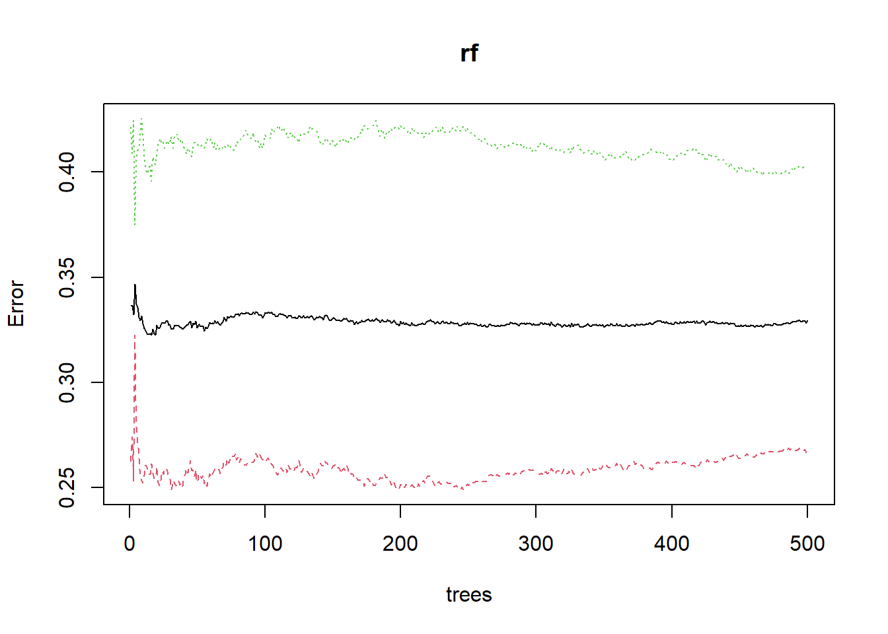
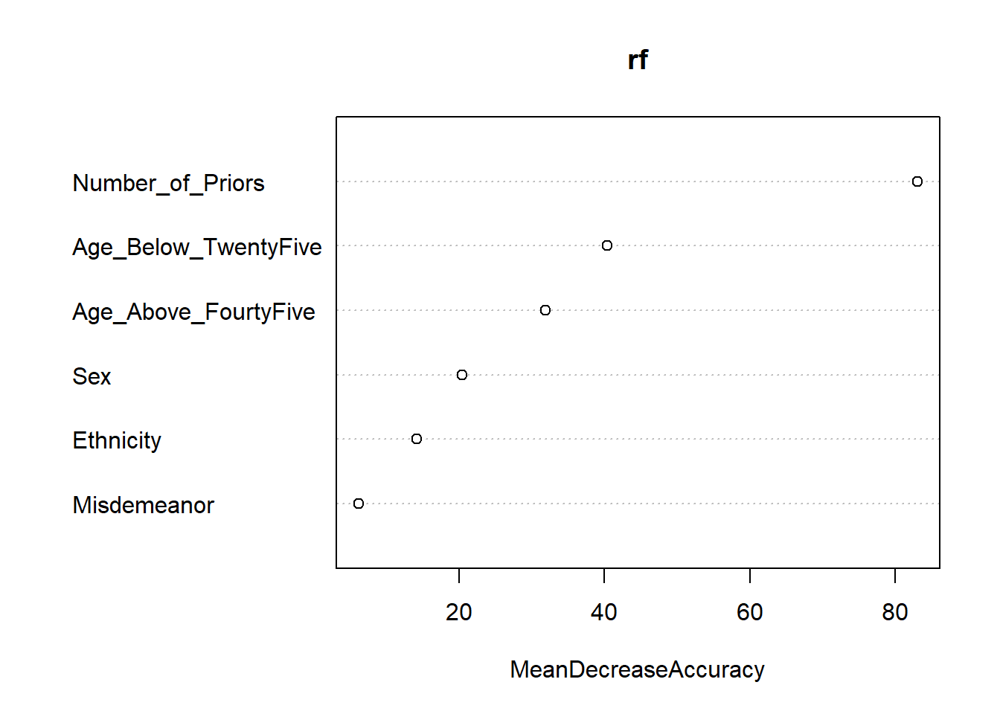
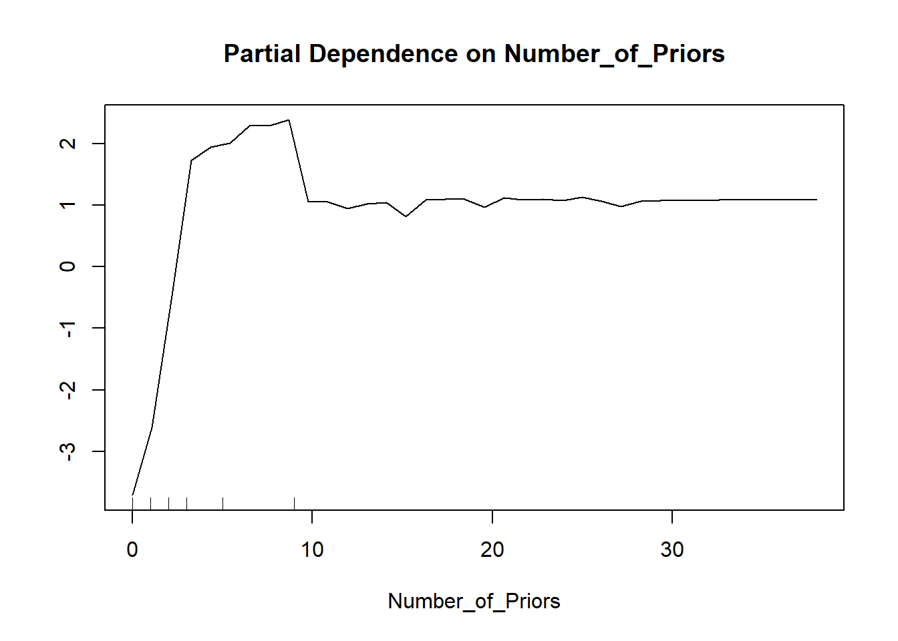

library(tidyverse) # datahåndtering, grafikk og glimpse()
library(rsample) # for å dele data i training og testing
library(randomForest)
library(caret)6 Random forest
I dette kapittelt skal vi bruke følgende pakker:
Random forest bruker klassifikasjonstrær og bagging som byggestener. I prinsippet er det “bagged trees”, men i stedet for å bagge samme type trær, så gjøres det en endring i hvert tre: I hver split i hvert enkelt tre trekkes det bare et fåtall variable for å bestemme hver split. Det brukes med andre ord mindre informasjon i hvert enkelt tre! Man skulle intuitivt tro at dette vil gi dårligere prediksjon, og det stemmer forsåvidt i hvert enkelt tre. Men på den annen side lages det mange trær og det er det aggregerte resultatet som blir prediksjonen. På samme måte som i bagging, så avgjøres klassifikasjonen ved majoritetsstemme over alle trærne.
Husk nå at random forest er en variant av bagging, så det som i forrige kapittel ble sagt om OOB gjelder også her. Med andre ord: det training og testing datasett benyttes internt i algoritmen. Slik sett trenger man ikke splitte datasettet i forkant. Resultatene og feilratene er beregnet med OOB-dataene. I utgangspunktet trenger man altså ikke å splitte datasettet.
Men: Det går an å bruke gjøre en split likevel. Da er det mer å regne som et valideringsdatasett. Hvis man tuner modellen og sjekker OOB-resultatene, så står man i fare for å overfitte mot OOB.1 Med andre ord: Det kan være en god ide å splitte dataene først likevel.
6.1 Eksempel med COMPAS-data
COMPAS (Correctional Offender Management Profiling for Alternative Sanctions) er et risikoverktøy brukt av politi og rettsvesen i flere amerikanske stater. Datasettet inneholder informasjon om personer som har vært gjennom rettssystemet, der utfallsvariabelen Two_yr_Recidivism angir om personen begikk ny kriminalitet innen to år. Vi bruker dette datasettet gjennom flere kapitler i heftet.
compas <- readRDS("data/compas.rds")
glimpse(compas)Rows: 6,172
Columns: 7
$ Two_yr_Recidivism <fct> 0, 1, 1, 0, 1, 0, 0, 0, 1, 0, 0, 1, 1, 0, 0, 1, 1…
$ Number_of_Priors <int> 0, 0, 4, 0, 14, 3, 0, 0, 3, 0, 0, 1, 7, 0, 3, 6, …
$ Age_Above_FourtyFive <fct> 1, 0, 0, 0, 0, 0, 0, 0, 0, 0, 0, 1, 0, 0, 0, 0, 0…
$ Age_Below_TwentyFive <fct> 0, 0, 1, 0, 0, 0, 0, 0, 1, 0, 0, 0, 0, 0, 0, 0, 0…
$ Misdemeanor <fct> 0, 0, 0, 1, 0, 0, 1, 0, 1, 1, 0, 0, 0, 1, 0, 0, 0…
$ Ethnicity <fct> Other, African_American, African_American, Other,…
$ Sex <fct> Male, Male, Male, Male, Male, Male, Female, Male,…Estimerer random forest med alle variable.
set.seed(4356)
rf <- randomForest(Two_yr_Recidivism ~ . ,
data = compas)
rf
Call:
randomForest(formula = Two_yr_Recidivism ~ ., data = compas)
Type of random forest: classification
Number of trees: 500
No. of variables tried at each split: 2
OOB estimate of error rate: 32.94%
Confusion matrix:
0 1 class.error
0 2462 901 0.2679156
1 1132 1677 0.4029904Følgende plot gir en oversikt over feilrater for random forest etter hvor mange trær. Den svarte linjen er den totale feilraten, den grønne er falske positive, og den røde er falske negative. I utgangspunktet bruker random forest 500 trær. Dette plottet viser når resultatene stabiliserer seg.
plot(rf)
Prediksjon fungerer på tilsvarende måte som vi har gjort tidligere.
compas_p <- compas %>%
mutate(pred_rf = predict(rf))Confusion matrix:
tab <- table(compas_p$pred_rf, compas_p$Two_yr_Recidivism)
tab
0 1
0 2462 1132
1 901 1677confusionMatrix(tab, positive="1")Confusion Matrix and Statistics
0 1
0 2462 1132
1 901 1677
Accuracy : 0.6706
95% CI : (0.6587, 0.6823)
No Information Rate : 0.5449
P-Value [Acc > NIR] : < 2.2e-16
Kappa : 0.3313
Mcnemar's Test P-Value : 3.378e-07
Sensitivity : 0.5970
Specificity : 0.7321
Pos Pred Value : 0.6505
Neg Pred Value : 0.6850
Prevalence : 0.4551
Detection Rate : 0.2717
Detection Prevalence : 0.4177
Balanced Accuracy : 0.6645
'Positive' Class : 1
Vi kan justere resultatet med å endre antall variable som tas med i hver split (i hvert tre). Parameteren mtry styrer dette:
set.seed(4356)
rf2 <- randomForest(Two_yr_Recidivism ~ . ,
mtry=4,
data = compas)
rf2
Call:
randomForest(formula = Two_yr_Recidivism ~ ., data = compas, mtry = 4)
Type of random forest: classification
Number of trees: 500
No. of variables tried at each split: 4
OOB estimate of error rate: 34.36%
Confusion matrix:
0 1 class.error
0 2608 755 0.2245019
1 1366 1443 0.48629416.1.1 Variable importance
For å få ut variable importance må dette settes i estimeringen med importance = TRUE. Det tar nå litt lengre tid å estimere, så med store datasett bør du vente med dette til du ellers er fornøyd med modellen.
set.seed(4356)
rf <- randomForest(Two_yr_Recidivism ~ . ,
importance = TRUE,
data = compas)
rf
Call:
randomForest(formula = Two_yr_Recidivism ~ ., data = compas, importance = TRUE)
Type of random forest: classification
Number of trees: 500
No. of variables tried at each split: 2
OOB estimate of error rate: 32.42%
Confusion matrix:
0 1 class.error
0 2538 825 0.2453167
1 1176 1633 0.4186543Vi kan da plotte variable importance plot. Set type = 1 for at det skal vise gjennomsnittlig reduksjon i accuracy. Plottet viser hvor mye dårligere modellens prediksjon blir hvis en variabel permuteres (stokkes om). Variable som er høyt oppe i plottet er mest viktige for prediksjonen.
varImpPlot(rf, type = 1)
6.1.2 Partial dependence
Variable importance forteller oss hvilke variable som er viktige, men ikke hvordan de påvirker prediksjonen. Partial dependence plot viser sammenhengen mellom en enkelt variabel og den predikerte sannsynligheten, justert for alle andre variable. Her må du velge hvilken variabel du ønsker å se på, og which.class angir hvilken klasse du vil se sannsynligheten for.
partialPlot(rf, pred.data = compas,
x.var = Number_of_Priors,
which.class = "1")
Plottet viser at sannsynligheten for tilbakefall øker med antall tidligere lovbrudd, noe som er intuitivt rimelig.
6.2 Tuning av random forest med sampsize
Det er mest vanlig å justere sampling-skjemaet i baggingen: altså hvor mange observasjoner som trekkes til å bygge hvert tre. Ved å bruke argumentet sampsize = ... kan vi angi antallet som trekkes fra hver kategori i utfallsvariabelen.
Hensikten med å gjøre dette er at hvis det er et mindretall som har det ene utfallet, så blir hvert tre bygget med mer informasjon om majoritetsgruppen. Hvis vi vekter opp minoritetsgruppen, så får disse større inflytelse på hvert tre.
6.2.1 Eksempel med COMPAS-data
Her setter vi sampsize = c(1900, 1900), altså like mange fra hver kategori av utfallsvariabelen. Det første tallet er antallet som trekkes fra kategori 0 (ingen tilbakefall) og det andre fra kategori 1 (tilbakefall):
set.seed(4356)
rf3 <- randomForest(Two_yr_Recidivism ~ . ,
sampsize = c(1900, 1900),
data = compas)
rf3
Call:
randomForest(formula = Two_yr_Recidivism ~ ., data = compas, sampsize = c(1900, 1900))
Type of random forest: classification
Number of trees: 500
No. of variables tried at each split: 2
OOB estimate of error rate: 32.73%
Confusion matrix:
0 1 class.error
0 2321 1042 0.3098424
1 978 1831 0.3481666Her er et eksempel der gruppene veies ulikt – vi trekker færre fra kategori 0 enn fra kategori 1, noe som gir mer vekt til tilbakefalls-gruppen:
set.seed(4356)
rf4 <- randomForest(Two_yr_Recidivism ~ . ,
sampsize = c(1000, 1900),
data = compas)
rf4
Call:
randomForest(formula = Two_yr_Recidivism ~ ., data = compas, sampsize = c(1000, 1900))
Type of random forest: classification
Number of trees: 500
No. of variables tried at each split: 2
OOB estimate of error rate: 41.15%
Confusion matrix:
0 1 class.error
0 1170 2193 0.6520963
1 347 2462 0.1235315Det viktige nå er at feilratene for falske positive og falske negative blir vesentlig forskjellig! Det betyr at ved hvordan vi estimerer modellen kan vi legge sterke føringer på resultatet. Vi bør derfor ta stilling til på forhånd hvilke feilrater vi er villig til å akseptere.
6.2.2 Eksempel med syntetiske data
Vi kan gjøre tilsvarende med de syntetiske fødselskohort-dataene. Her håndterer vi først eventuelle manglende verdier med replace_na(). Merk at randomForest() ikke håndterer manglende verdier (NA), så disse må erstattes før estimeringen. En enkel løsning er å sette NA til 0, men i praksis bør man vurdere om dette er faglig rimelig.
load("data/synthetic_birthCohort96.RData")
synth <- synthetic_birthCohort %>%
select(-drugs, -violence) %>%
mutate(felonies = factor(felonies)) %>%
mutate(across(everything(), ~replace_na(.x, 0)))
set.seed(426)
synth_split <- initial_split(synth)
synth_train <- training(synth_split)
synth_test <- testing(synth_split)
table(synth_train$felonies)
0 1
21579 921 Vi sammenligner flere ulike konfigurasjoner av sampsize. Først kjører vi med forvalget, uten å angi sampsize. Da trekker randomForest() like mange observasjoner som det er i datasettet, men med tilbakelegging:
# Default (ingen sampsize angitt)
rf_s1 <- randomForest(felonies ~ ., data = synth_train)
synth_test1 <- synth_test %>%
mutate(pred = predict(rf_s1, newdata = ., type = "response"))
confusionMatrix(reference = synth_test1$felonies, synth_test1$pred, positive = "1")Confusion Matrix and Statistics
Reference
Prediction 0 1
0 7193 306
1 0 1
Accuracy : 0.9592
95% CI : (0.9545, 0.9636)
No Information Rate : 0.9591
P-Value [Acc > NIR] : 0.4919
Kappa : 0.0062
Mcnemar's Test P-Value : <2e-16
Sensitivity : 0.0032573
Specificity : 1.0000000
Pos Pred Value : 1.0000000
Neg Pred Value : 0.9591946
Prevalence : 0.0409333
Detection Rate : 0.0001333
Detection Prevalence : 0.0001333
Balanced Accuracy : 0.5016287
'Positive' Class : 1
Deretter prøver vi en balansert sampsize der vi trekker like mange fra hver kategori:
# Balansert sampsize
rf_s2 <- randomForest(felonies ~ .,
sampsize = c(600, 600),
data = synth_train)
synth_test2 <- synth_test %>%
mutate(pred = predict(rf_s2, newdata = ., type = "response"))
confusionMatrix(reference = synth_test2$felonies, synth_test2$pred, positive = "1")Confusion Matrix and Statistics
Reference
Prediction 0 1
0 5516 145
1 1677 162
Accuracy : 0.7571
95% CI : (0.7472, 0.7667)
No Information Rate : 0.9591
P-Value [Acc > NIR] : 1
Kappa : 0.0869
Mcnemar's Test P-Value : <2e-16
Sensitivity : 0.52769
Specificity : 0.76686
Pos Pred Value : 0.08809
Neg Pred Value : 0.97439
Prevalence : 0.04093
Detection Rate : 0.02160
Detection Prevalence : 0.24520
Balanced Accuracy : 0.64727
'Positive' Class : 1
Vi kan også prøve en ubalansert sampsize der vi trekker litt flere fra minoritetsgruppen:
# Ubalansert sampsize
rf_s3 <- randomForest(felonies ~ .,
sampsize = c(500, 600),
data = synth_train)
synth_test3 <- synth_test %>%
mutate(pred = predict(rf_s3, newdata = ., type = "response"))
confusionMatrix(reference = synth_test3$felonies, synth_test3$pred, positive = "1")Confusion Matrix and Statistics
Reference
Prediction 0 1
0 4922 106
1 2271 201
Accuracy : 0.6831
95% CI : (0.6724, 0.6936)
No Information Rate : 0.9591
P-Value [Acc > NIR] : 1
Kappa : 0.0775
Mcnemar's Test P-Value : <2e-16
Sensitivity : 0.65472
Specificity : 0.68428
Pos Pred Value : 0.08131
Neg Pred Value : 0.97892
Prevalence : 0.04093
Detection Rate : 0.02680
Detection Prevalence : 0.32960
Balanced Accuracy : 0.66950
'Positive' Class : 1
Til sist prøver vi en konfigurasjon der vi trekker langt flere fra kategori 0 enn fra kategori 1:
# Større sampsize
rf_s4 <- randomForest(felonies ~ .,
sampsize = c(800, 400),
data = synth_train)
synth_test4 <- synth_test %>%
mutate(pred = predict(rf_s4, newdata = ., type = "response"))
confusionMatrix(reference = synth_test4$felonies, synth_test4$pred, positive = "1")Confusion Matrix and Statistics
Reference
Prediction 0 1
0 6861 245
1 332 62
Accuracy : 0.9231
95% CI : (0.9168, 0.929)
No Information Rate : 0.9591
P-Value [Acc > NIR] : 1.0000000
Kappa : 0.1372
Mcnemar's Test P-Value : 0.0003433
Sensitivity : 0.201954
Specificity : 0.953844
Pos Pred Value : 0.157360
Neg Pred Value : 0.965522
Prevalence : 0.040933
Detection Rate : 0.008267
Detection Prevalence : 0.052533
Balanced Accuracy : 0.577899
'Positive' Class : 1
Merk at de ulike konfigurasjonene gir tydelig forskjellige feilrater. Det er dette Berk (2016) kaller asymetriske kostnader og må vurderes i henhold til konsekvenser av hva prediksjonen skal brukes til.
Jeg har forstått det slik at de lærde strides noe om dette.↩︎